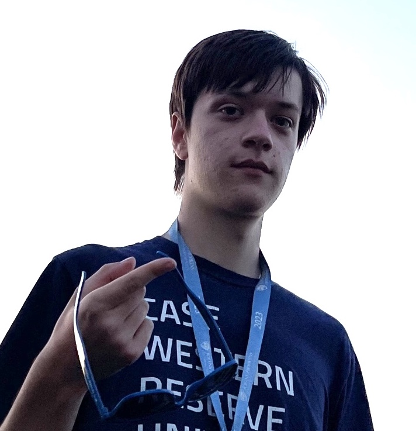
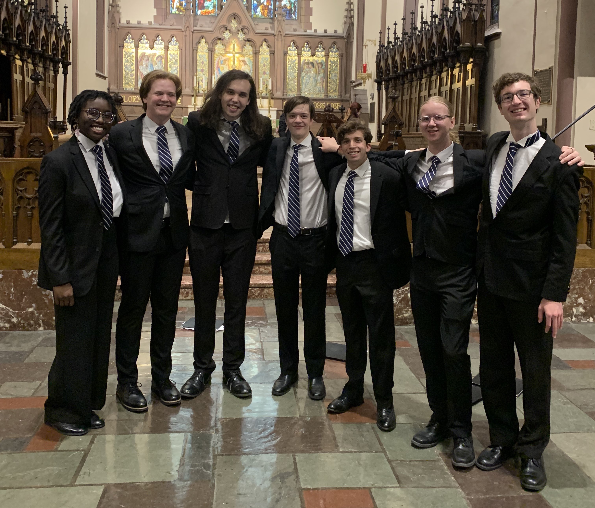
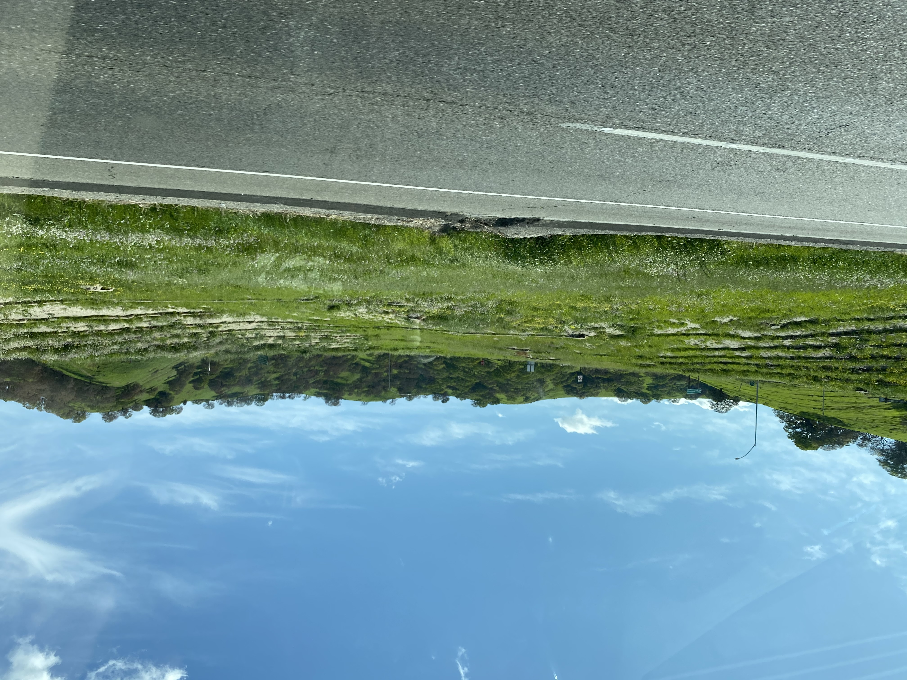
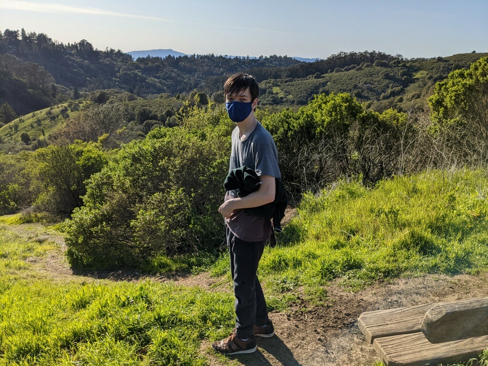
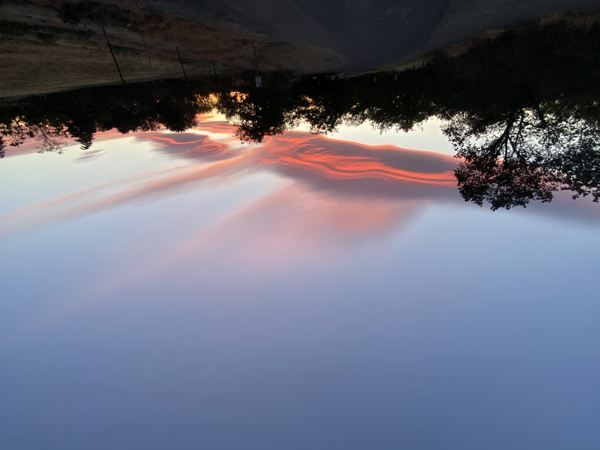

Adam Hutchings

Introduction
About Me
Welcome! I am an incoming software developer on Epic Systems'
Cognitive Computing team. Before that, I graduated in May 2026 from Case Western Reserve University
with degrees in computer science and mathematics.
Where I've Been Before
If you think you know me from somewhere, it may be from:
- 2010-2016: Willett Elementary School, Davis, California
- 2016-2017: John F. Kennedy School, Berlin, Germany
- 2017-2019: Holmes Junior High School, Davis, California
- Summers 2017-2019: GLS Schmöckwitz, Berlin, Germany
- Summers 2018-2019: Center for Talented Youth (camper), JHU and LMU sites
- 2019-2022: Davis Senior High School, Davis, California
- 2022-2026: Case Western Reserve University, Cleveland, OH
- Summer 2023: Center for Talented Youth (staff member), BRI site
- Summer 2025: Software Developer Intern, Epic Systems, Madison, WI
As for specifics on my academics beyond what I cover in the introduction,
you can find them split across math and CS below.
What I'm Up To Now
Besides my work at Epic, I am working with Dr. Soumya Ray from CWRU on studying
altruistic behavior exhibited by machine learning models towards one another. At
some point this will culminate in a paper and I am very excited!
Miscellaneous
Music
While not an area I actively study, I have always enjoyed music (listening,
performing, and composing) as a hobby.
I have sung for over a decade now, tenor / baritone, and have recently begun to
enjoy barbershop music. Here is me after a performance with Briefcase, a
barbershop octet I sang with at Case:

I also enjoy composing, mainly for piano and voice. My piano compositions are
mainly either serene melodies or random
catchy beats I make up while messing around on a keyboard, while my vocal
compositions tend to be very smooth, flowing, classical-esque works.
Writing
One of my other longest-lasting hobbies is writing. Two friends and I wrote a
book back in 2017, which was so badly written (as we were 13) that I will not
link a copy of it here for shame. I am currently editing a book, We Are Not
Those Who Came Before Us, about the experiences of teenagers who went
through the COVID pandemic.
Miscellaneous Pictures
While I have spent most of the last four years in Ohio for school and now live in
Madison, California and its
landscapes will always hold a special place in my heart. I've grown to love the
scorching summer days and the cool nights, the winter rains and the spring
bloom. Here are some of my favorite pictures from the lands around where I grew
up and formed memories.


